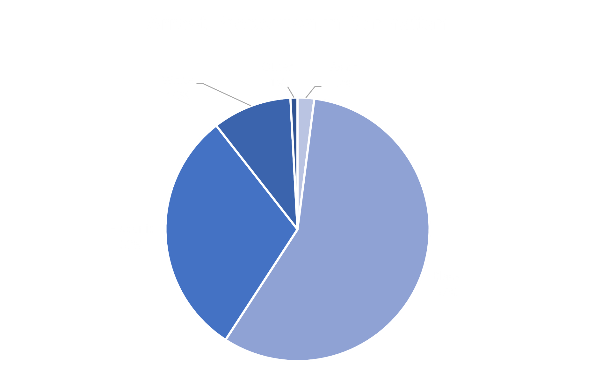
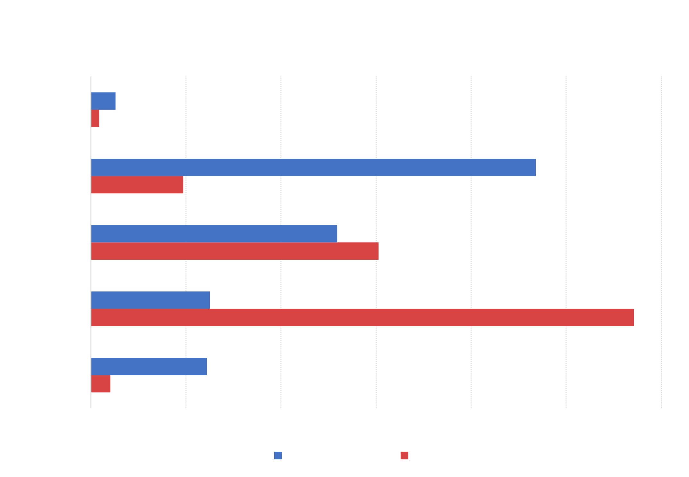
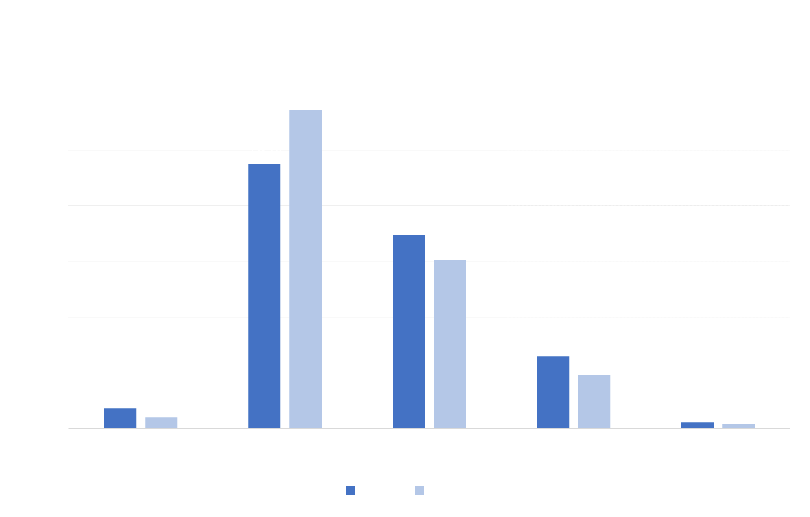

Manhattan Analysis

The Black demographic group comprised the largest proportion of arrests in Manhattan during June 2020. 57% of arrests were of Black individuals. The Hispanic demographic group has the 2nd highest proportion of arrests at 30%. White, Asian, and Other make up the remaining total of 13%.

The chart above compares each demographic group's overall proportion in the composition of the borough with the proportion of arrests on the demographic group within the borough. In Manhattan, the most drastic difference between the two bars occurs in both the White and Black demographic groups. The arrested population consist of a significantly lower proportion of white indiviuals when compared to the percentage of white individuals living in Manhattan. Only 10% of arrested individuals are White, while 47% of the overall Manhattan population is White. On the flip side, Black individuals only make up 13% of the Manhattan population, but 57% of the arrested population.

The arrest proportion for different demographic groups experienced significant changes in Manhattan from June 2019 to June 2020. Asian, Hispanic, and White demographic groups all saw a decreased proportion of arrests, while the Black demographic group's proportion of the arrested population jumped from 48% to 57%.